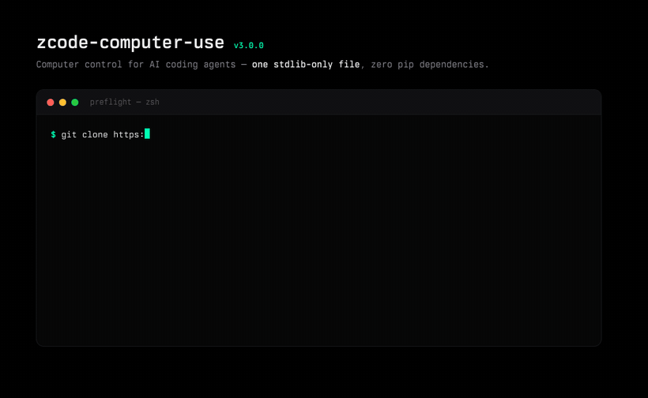
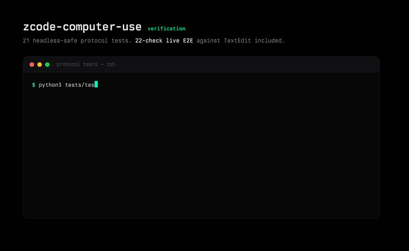
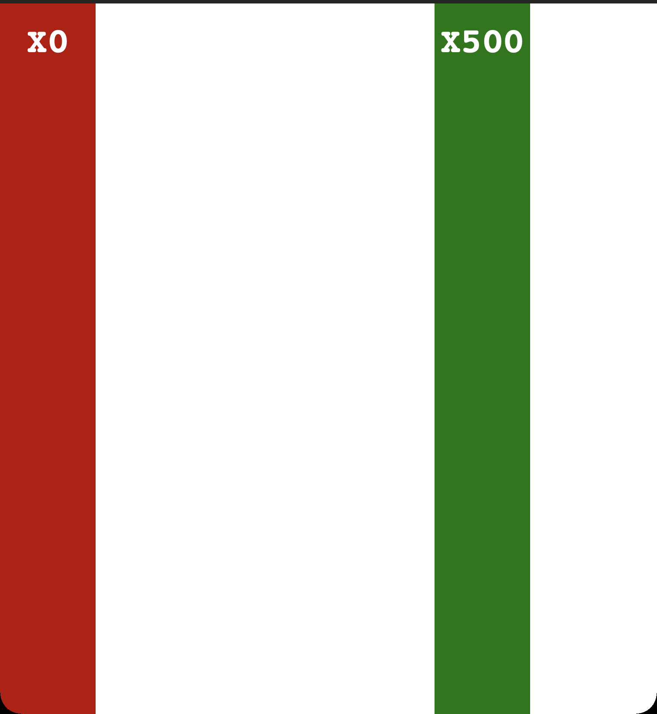
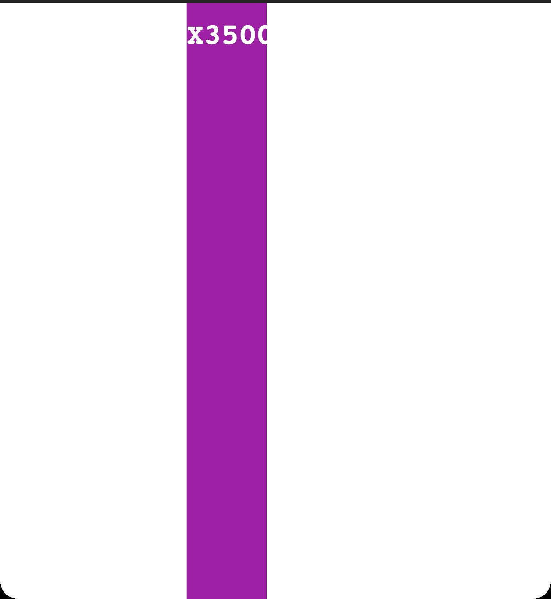

Computer control for AI coding agents: a per-window screenshot plus an indexed accessibility tree, element-first actions with pixel fallback — and after every action, diff markers that show exactly what changed. One stdlib-only Python file. No pip installs. No daemon. Read the whole driver in an afternoon.




get_app_state → screenshot PNG → indexed AX tree → pixel scale
click element_index 12 # AXPress preferred # or x/y screenshot px
get_app_state
→ tree: +3 new ~1 changed
→ diff keyed by position,
not by brittle index
{
"mcpServers": {
"zcode-computer-use": {
"command": "python3",
"args": ["/absolute/path/to/zcode-computer-use/mcp/server.py"],
"env": { "PYTHONUNBUFFERED": "1" }
}
}
}
Paste into your MCP config — ZCode, Claude Code, Cursor, any MCP host. Then grant the host app Accessibility + Screen Recording (System Settings → Privacy & Security) and run python3 mcp/server.py selftest — it names the exact missing permission.
| zcode-computer-use | typical alternative | |
|---|---|---|
| Install surface | one .py, zero pip deps | runtime + package graph |
| Auditability | whole driver ~1,800 lines | trust the bundle |
| Tree hygiene | forced re-fetch, anti-forgery, diff markers | varies |
| Errors | structured {code, message, remedy} | prose strings |
| Focus | activate:false — observe without stealing focus | usually activates |
| Scroll | 4-way, verified, session-tap recipe documented | often vertical-only, unverified |
| Text selection | content-verified + keyboard fallback | rare |
| Tests | 21 protocol + 22-check live E2E | — |
The pitch isn't more features — it's that the whole driving stack fits in one auditable file, with the hard-won traps written down: HID-tap wheel-event drops, apps that silently ignore scripted selection writes, JXA CFRelease segfaults.
activate:false captures and reads a background window without raising it.
Activation is opt-in per call; launching apps always is./usr/bin/python3
(pyobjc ships with the Xcode CLT). No pip anywhere.